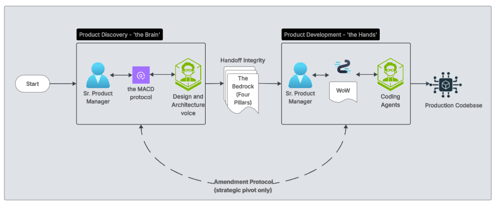

The PM's old boundary was defined by explaining the idea. The new boundary is defined by proving it.
Before AI, the impulse was always to push left — spend more time in discovery, get the brief right, align stakeholders before a line of code was written. That was the right instinct. The problem was that doing discovery properly was slow. It consumed time and effort that felt hard to justify when the pressure to ship was real.

Now, hands-on "vibe coding" has exposed a massive gap: AI coding agents can ship production-ready code in minutes, yet our AI "Product Brains" still struggle to hold onto a high-fidelity PRD from a brainstorming session. As sessions grow, AI suffers from Semantic Noise and Middle Degradation—it loses the high-stakes strategic pivots made in the middle of a chat.
You can't just chat your way to complex software. You have to anchor the AI execution to an immutable "Bedrock" of truth. This means you can do the rigorous work and move fast. Push left properly, then push right with confidence.
Push left means producing the brief that locks direction, the spec that guides the build, and the criteria that define done. These aren't just documentation; they are the structured guardrails that cut through semantic noise so coding agents build exactly what was intended. One rigorous process. Two audiences served.
Push right means being close enough to the build to course-correct in real time — not waiting for a sprint review to find out the interpretation was wrong. It means knowing when to use AI to compress the timeline and when to slow down and think. It means the handoff to a development team isn't a leap of faith — it's a Working Product with real users already in it.
There's a less obvious consequence of building with AI that took me a while to name. Traditional software is deterministic — input X always produces output Y. Acceptance criteria was essentially a checklist. Pass or fail, mechanically. AI systems are probabilistic. The same input can produce meaningfully different outputs. That changes what testing means. You're no longer verifying a correct answer — you're verifying that the intent was understood and the output falls within an acceptable range. That requires a much closer relationship between the person who defined the intent and the person validating the result. The PM doesn't hand off and wait for a test report. The PM is in the room.